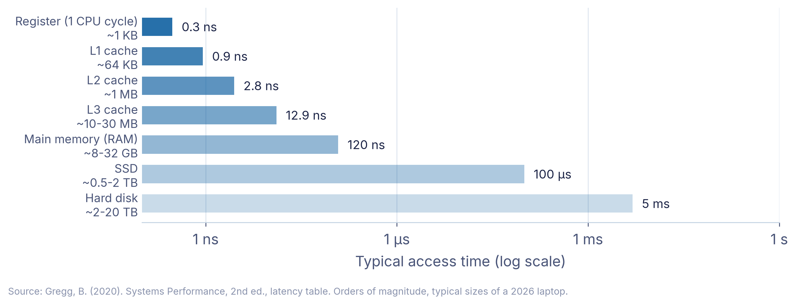
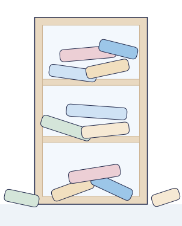
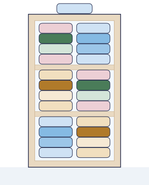
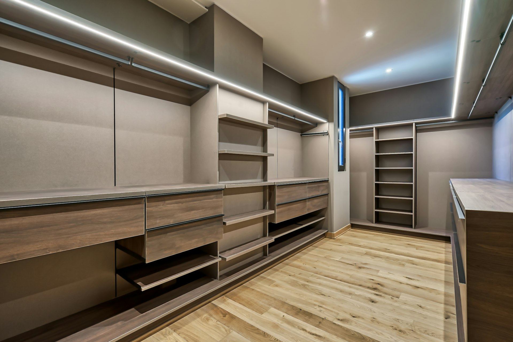
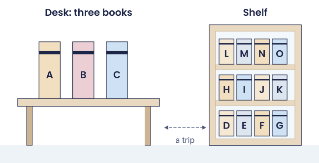
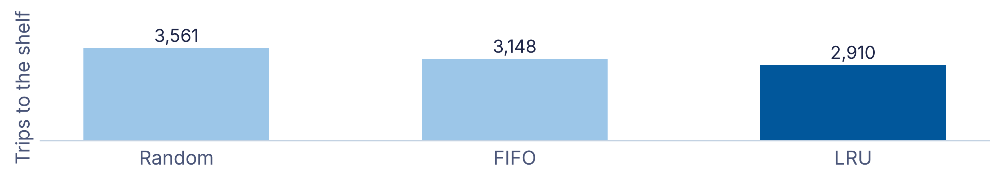
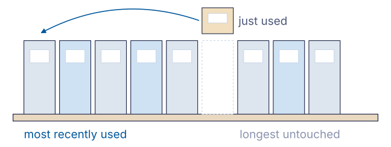
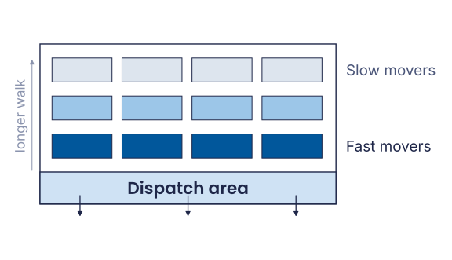
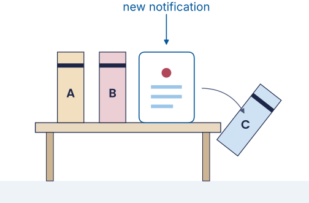

Lecture III: Caching
Programming: Everyday Decision-Making Algorithms
Today in one sentence
When space is limited, keep close what you are likely to need next, and the best guide to that is what you used most recently.
Why it matters
Your cupboard is full, your desk is cluttered, your inbox overflows. Companies have the same problem: which goods sit next to the loading dock, which files stay on the fast server, which tasks get your attention today.
Roadmap
- The problem: limited space, too much stuff
- The solution: keep what you need close, clear out the rest
- Your mind is a cache: protecting your attention
The problem: limited space, too much stuff
A quick question first
Question: How many of you have a messy desktop right now? Raise your hand!
Today’s lecture will explain why that matters more than you think…
A messy cupboard
Question: What would you do?
- Sort it: similar things together
- Keep what you use often within easy reach
- Now you find things faster

Organized, but full
Question: And now?
- Get more space
- Clear out

Notes
Better organization helps, but every storage has a finite capacity. More space helps, but it has limits too. Sooner or later we are left with the second option: clearing out. The rest of the lecture is about how to do that well.
Why not just buy more space?
- It costs money
- Bigger storage is slower to search
- Sooner or later it fills up again

Notes
The trade-off behind the second point: size versus speed. The larger a storage, the longer it takes to find a thing in it. That holds for a cupboard, a warehouse and, as we will see, for computer memory.
Who else has this problem?
- Warehouses
- Computers
- Email inboxes
- Smartphones
- Our brain?!
A fast processor waiting for slow memory
- Processors got faster much more quickly than memory
- Modern CPUs: billions of operations per second
- But the data doesn’t arrive fast enough
- Question: How would you solve this?
- Make all memory fast? Far too expensive.
- Better: keep the data you need most right next to the processor.
That small, fast memory is called a cache.1
Notes
The evolution of computer memory: computer science faced the same storage problem as our cupboard. In 1946 von Neumann’s team already expected a hierarchy of memories. Processors then became faster much more quickly than memory (Moore’s Law, 1965), so in 1965 Maurice Wilkes proposed a small, fast memory close to the processor (he called it a “slave memory”), the first cache. In 1995 Wulf and McKee called the growing gap the “Memory Wall”. The waiting itself is often called the von Neumann bottleneck, a term coined by John Backus in 1977.
The cache: a hierarchy of memories
A hierarchical memory system
- L1 Cache: Tiny but ultra-fast (kilobytes)
- L2/L3 Cache: Larger, still fast (megabytes)
- RAM: Main workspace (gigabytes)
- Storage: Huge but slow (terabytes)
Like a library…
Like a library: closer is faster and smaller
- Library storage (millions of books, mass storage)
- Subject shelves (thousands of books, RAM)
- Your desk (a few borrowed books, L2)
- Short-term memory (current page, L1)
Closer = Faster = Smaller
Fast memory is small, big memory is slow
A register is roughly ten million times faster than a hard disk. Question: Why not make everything that fast?
Why not make everything fast?
- Physics: larger memory sits further away, signals take longer, fast memory gets hot
- Money: per gigabyte, cache memory costs many times more than a hard disk
- Solution: several levels, each optimized for its job
Notes
Physical limits: larger memory sits further from the CPU, signals take longer to travel, and dense fast memory produces heat that must be dissipated. Economic limits: per gigabyte, fast cache memory costs many orders of magnitude more than a hard disk. The solution is a hierarchy with multiple cache levels, each optimized for different needs.
So we have to clear out. But what goes?
- True for cupboards, computers, brains…
- But what stays and what goes?
The solution: keep what you need close, clear out the rest
Roadmap
- The problem: limited space, too much stuff
- The solution: keep what you need close, clear out the rest
- Your mind is a cache: protecting your attention
A desk for three books
- You study at a desk with room for three books
- All other books are on a shelf across the room
- Every trip to the shelf costs time
- When the desk is full and you need another book, one has to go back
- Question: Which one?

Notes
This desk is our model for the whole lecture. The desk is the cache: small and fast. The shelf is the big, slow storage. A trip to the shelf is a cache miss. The question “which book goes back?” is the eviction problem.
Three ways to decide what goes
- Random: put back any book
- First-In, First-Out (FIFO): put back the book that has been on the desk the longest
- Least Recently Used (LRU): put back the book you haven’t touched for the longest time
Try it: which book leaves the desk?
The desk is empty. You need these books, in this order:
A, B, C, A, D, A, B
In pairs, 3 minutes: play it through with FIFO and with LRU. Count your trips to the shelf.
FIFO: six trips to the shelf
| Request | Desk afterwards | Trip? |
|---|---|---|
| A | A | yes |
| B | A B | yes |
| C | A B C | yes |
| A | A B C | no |
| D | B C D (A leaves) | yes |
| A | C D A (B leaves) | yes |
| B | D A B (C leaves) | yes |
FIFO throws out A, the book we use all the time.
LRU: five trips to the shelf
| Request | Desk afterwards | Trip? |
|---|---|---|
| A | A | yes |
| B | A B | yes |
| C | A B C | yes |
| A | A B C | no |
| D | A C D (B leaves) | yes |
| A | A C D | no |
| B | A D B (C leaves) | yes |
LRU keeps A, because we just used it.
And Random?
Question: Would you clear out your cupboard by throwing out things at random?

Computer scientists call a trip to the shelf a miss, and finding the book on the desk a hit.
In the tutorial, you build this yourself.
Notes
Simulation: a desk for three books, 20 different books, 10,000 requests. A book that was used recently is requested again with higher probability, like in real life. Random eviction needs the most trips to the shelf, FIFO fewer, LRU the fewest. Random is not terrible, but it ignores everything we know about what comes next.
The perfect strategy needs a crystal ball
- Optimal: Clairvoyance
- Keep what you’ll need
- Remove what you won’t
- Question: What’s the problem?
→ Requires knowledge of the future!
LRU works because the recent past predicts the near future
- Least Recently Used (LRU) is the dominant strategy
- Question: Why is this the better strategy?
- Temporal locality: what you used recently, you will likely need again soon
- Books on your desk, apps opened today, people texted this morning
- In Belady’s classic comparison, LRU came closest to the crystal ball2
The pile on your desk is not a mess
- The economist Yukio Noguchi files everything in one row: whatever he used goes back to the left end
- So the most recently used files are always in front
- A pile does the same: what you used last lies on top
- Proven: searching such a row from the front never takes more than twice as long as the best possible order3

Keep it close: caching in logistics
Question: Where do you see this in a warehouse or a supermarket?
- Warehouses: fast-moving goods sit next to the dispatch area
- Retail: goods are stored in regional warehouses close to the customer
- Streaming: popular films are kept on servers in your region

This is spatial locality: keep things where they are used.
Notes
Examples from Christian & Griffiths (2016), ch. 4.
Your mind is a cache: protecting your attention
Roadmap
- The problem: limited space, too much stuff
- The solution: keep what you need close, clear out the rest
- Your mind is a cache: protecting your attention
Forgetting is a feature
- Hermann Ebbinghaus measured how memory fades over time: the forgetting curve
- One reading: the brain runs out of space
- A better one: the brain keeps close what you will likely need again
- What you haven’t used for a long time gets harder to reach, just like LRU4
Your attention is a desk for three books
- Only a few things fit into your attention at once
- Every notification puts a new book on the desk
- And pushes another one off
- You did not choose which one

Flooding and poisoning
- Flooding: so many notifications that what matters gets pushed out. That is distraction.
- Poisoning: false information lands on your desk and you rely on it without checking. That is misinformation.
- Both work because attention is small and we trust what is right in front of us.
Notes
The terms come from computer security. Cache flooding is a form of Denial-of-Service attack: the system is overloaded with requests, important data is evicted, the system slows down or crashes. Cache poisoning plants false data in a cache, so later requests are answered with wrong content; DNS cache poisoning, for example, sends users to a fake website. Both exploit that a cache is small and is trusted without checking the original source.
Getting it back is expensive
- After an interruption, it often takes 20+ minutes to get back on track5
- Like a trip to the slowest memory: millions of times more expensive than staying at the desk
- Technology and social media are designed to capture attention
Reflection: How many times did you check your phone during this lecture?
Notes
Five productivity killers, in cache terms. Overload: too much information at once, the cache capacity is exceeded. Exhaustion: too long without clearing out. Context switching: every interruption of flow costs often 20 minutes or more to get back on track. Distraction: cache flooding by constant notifications and social media. Misinformation: cache poisoning by fake news and misleading information. The result is less creativity, less critical thinking and less productivity.
What gets evicted: first the task, then your goals, then your values
- Spotlight: what you are doing right now
- Starlight: your goals for this year
- Daylight: your values, who you want to be6
LRU evicts what you haven’t touched for a long time. If your attention always goes to notifications, you first lose the task, then your goals, and in the end, Williams argues, yourself.
Notes
The three levels come from James Williams, a former Google strategist, quoted in Johann Hari’s “Stolen Focus”. Spotlight: immediate goals, your focus, what are you working on right now? Starlight: medium-term goals, your wishes, what matters this year? Daylight: long-term goals, your values, what defines your life direction?
What to do about it
- Fewer interruptions: notifications off while you work, one thing at a time
- Choose what gets in: be selective with news and feeds
- Touch what matters: revisit your goals regularly, so they don’t get evicted
Want to dive deeper? Rolf Dobelli, The Not To-Do List, chapters 15, 46, 51 and 52. Johann Hari, Stolen Focus. And because news is a big source of distraction: Rolf Dobelli, Stop Reading the News.
Notes
More tips, in cache terms. Prioritize sleep, nutrition and mindful habits: they maintain cache performance. Take breaks: regular clearing out prevents exhaustion. Time-box your work: structure prevents overflow. Create protected time for deep work and a dedicated workspace: that prevents cache flooding. Meditation and exercise are maintenance routines for the cache. Treat your desk as a cache hierarchy: hot cache on the desk with only today’s tasks, warm cache in a nearby shelf or drawer with this week’s projects, cold storage in the archive or closet for everything else. If you haven’t used it recently, move it away. Distraction can hardly be avoided in today’s world, especially for managers, but it can be reduced, and awareness is the first step.
Self-assessment
Question: Right now:
- How many browser tabs do you have open? ___
- How many notifications did you receive in the last hour? ___
- How many unread emails in your inbox? ___
Do you see any risks of cache flooding?
One last check
Your desk holds three books. You need C, A, B, C, D.
Question: Which book leaves the desk under LRU when D arrives?
A. C was just used, B came after A, so A is the one you haven’t touched for the longest time.
What we covered
The problem: limited space, too much stuff
Every storage system faces the same question: what to keep close and what to clear out.
The solution: keep what you need close, clear out the rest
Fast storage is always small, so we need a rule for clearing out. Least Recently Used works because the recent past predicts the near future.
Your mind is a cache: protecting your attention
Your attention works like a cache: small, valuable and easily flooded, so protect it.
Why it matters
Your cupboard is full, your desk is cluttered, your inbox overflows. Companies have the same problem: which goods sit next to the loading dock, which files stay on the fast server, which tasks get your attention today.
Literature
Interesting literature to start
- Christian, B., & Griffiths, T. (2016). Algorithms to live by: the computer science of human decisions. First international edition. New York, Henry Holt and Company.7
Books on Programming
- Downey, A. B. (2024). Think Python: How to think like a computer scientist (Third edition). O’Reilly. Free online
- Elter, S. (2021). Schrödinger programmiert Python: Das etwas andere Fachbuch (1. Auflage). Rheinwerk Verlag.
Think Python is free online and a great start. Schrödinger programmiert Python is a playful alternative in German.
More Literature
For more interesting literature, take a look at the literature list of this course.
Footnotes
Burks, A. W., Goldstine, H. H., & von Neumann, J. (1946). Preliminary discussion of the logical design of an electronic computing instrument. Wilkes, M. V. (1965). Slave memories and dynamic storage allocation. Wulf, W. A., & McKee, S. A. (1995). Hitting the memory wall. See also Christian & Griffiths (2016), ch. 4.↩︎
Belady, L. A. (1966). A study of replacement algorithms for a virtual-storage computer. IBM Systems Journal, 5(2), 78–101; see also Christian & Griffiths (2016), ch. 4. In Tutorial III.III you measure LRU against random eviction yourself.↩︎
Sleator, D. D. & Tarjan, R. E. (1985). Amortized efficiency of list update and paging rules. Communications of the ACM, 28(2); see also Christian & Griffiths (2016), ch. 4.↩︎
Anderson, J. R. & Schooler, L. J. (1991). Reflections of the environment in memory. Psychological Science, 2(6); see also Christian & Griffiths (2016), ch. 4.↩︎
Order of magnitude from Gloria Mark’s workplace studies, e.g. Mark, G., Gonzalez, V. M., & Harris, J. (2005). No task left behind? Examining the nature of fragmented work. CHI 2005.↩︎
Williams, J. (2018). Stand Out of Our Light. Cambridge University Press; quoted in Hari, J. (2022). Stolen Focus.↩︎
The main inspiration for this lecture. We have read it and discussed it in depth, always wanting to translate it into a course.↩︎